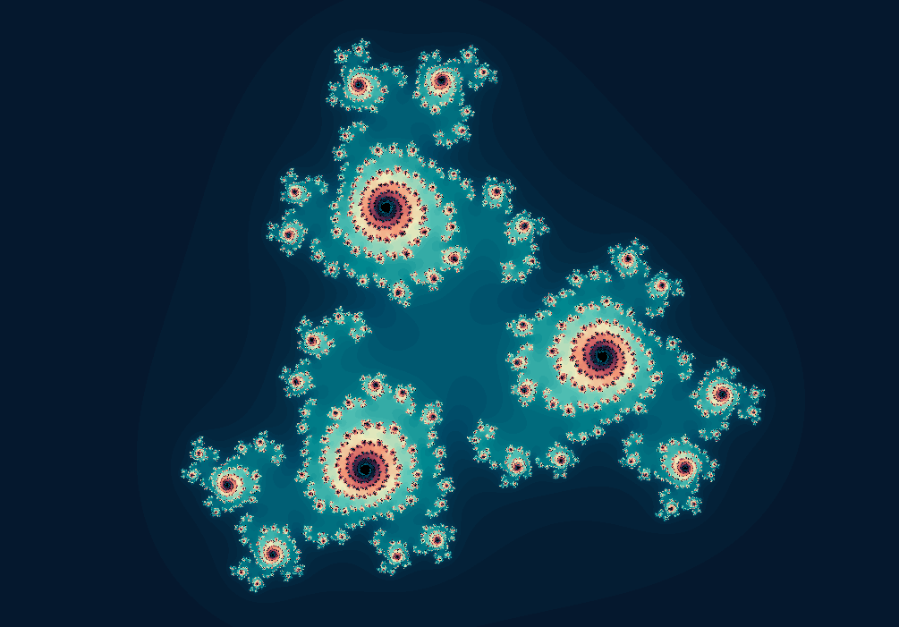
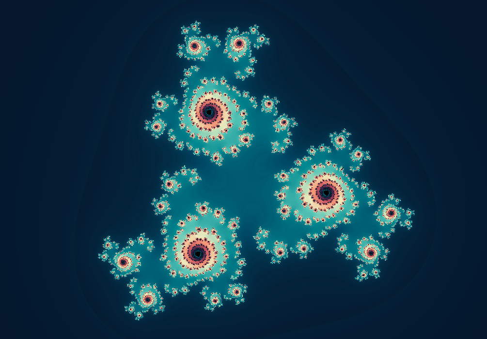
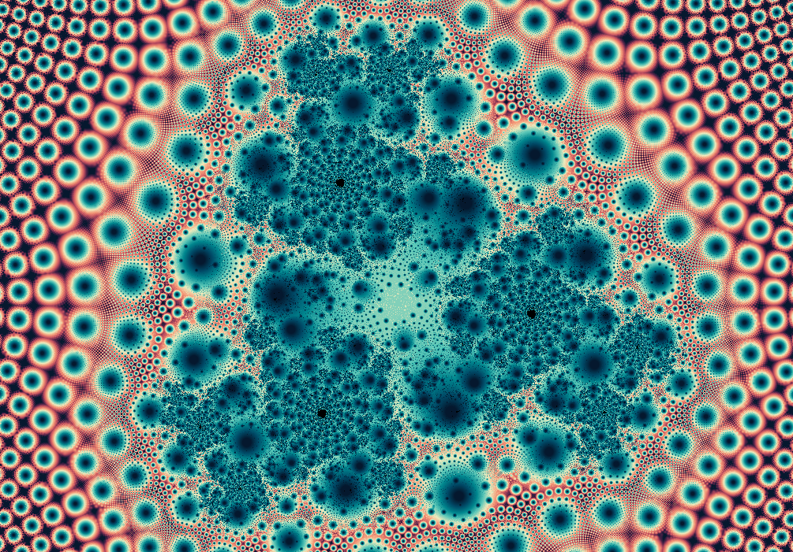
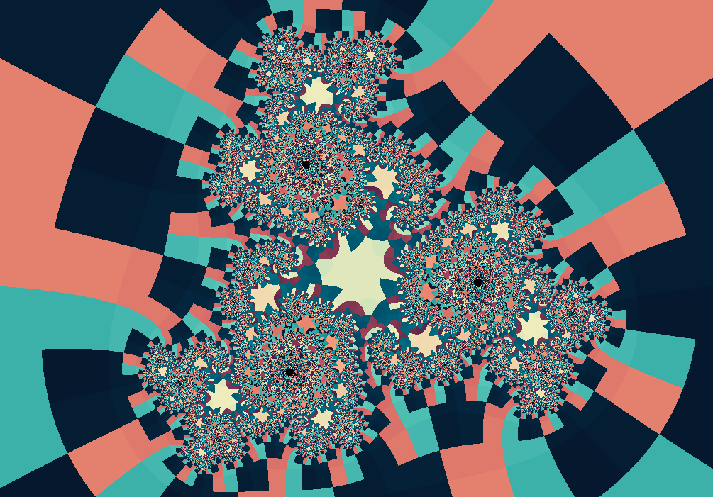
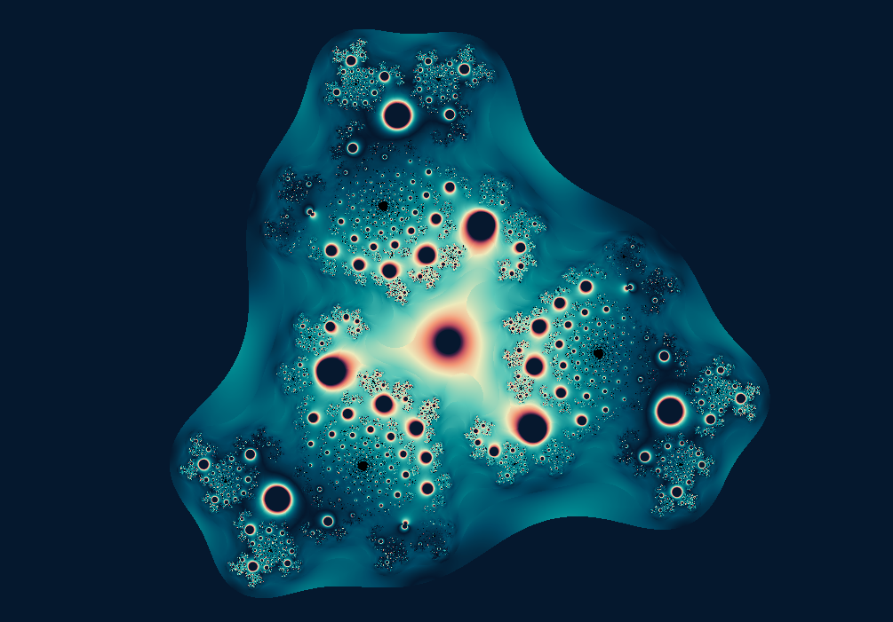
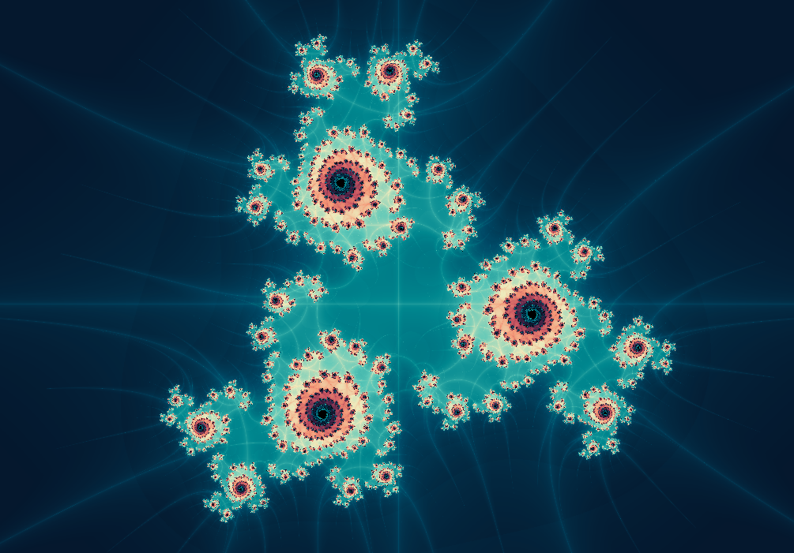

Fractal gallery
Julia Z^m
A Julia family where the exponent becomes a sculpting tool.
\(z_{n+1}=z_n^m+k\)
The familiar quadratic Julia set uses \(z^2+k\). Julia Z^m lets you raise \(z\) to a chosen power, producing extra arms, symmetries, and rotational rhythms.

What to try first
Use Change m to open View > Fractal options, then set \(m=3\) or \(m=4\). Look for the way additional powers add rotational structure.
Adjust the parameter \(k\) slightly. Watch the difference between a connected body and a broken dust of islands.
Use orbit display near one arm and compare it with the matching arm after rotation.
Mathematical notes
What the exponent does
wxChaos iterates \(z_{n+1}=z_n^m+k\), where the pixel supplies \(z_0\), \(k\) is the fixed Julia constant, and \(m\) is the chosen exponent. Increasing \(m\) increases the natural rotational symmetry of the map and changes how quickly large values escape.
Coloring lenses
The set stays the same, but each rendering method asks a different question about the orbit.


Gaussian integer
Measures how closely escaping orbits pass near the complex integer lattice.
Apply in wxChaos

Triangle inequality
Turns relationships inside the orbit into layered, topographic texture.
Apply in wxChaos
Orbit traps
Colors points by how closely their orbits pass near the real and imaginary axes.
Apply in wxChaos